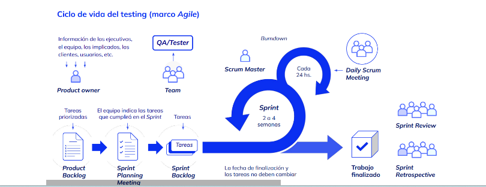
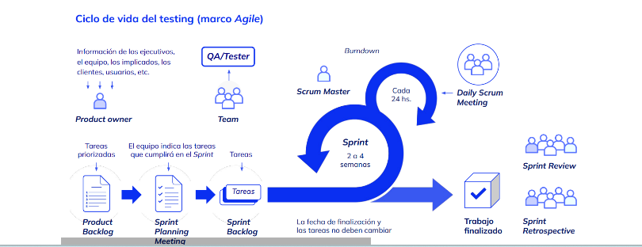

Software Tester QA
Los QA tester son profesionales que se dedican al análisis de control de calidad.
Su nombre en inglés hace referencia a la quality assurance, es decir, a la garantía y
verificación de la calidad.
 
